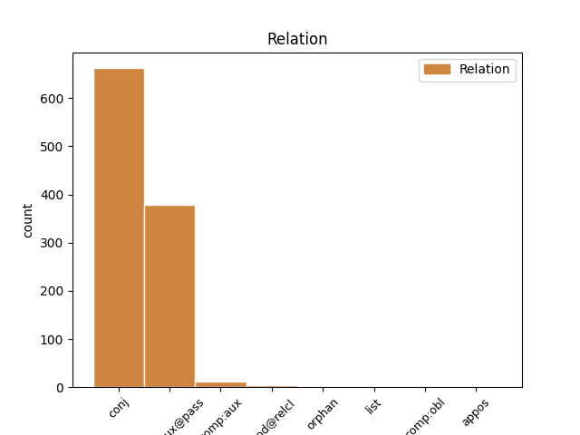
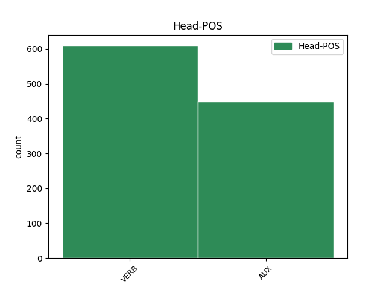
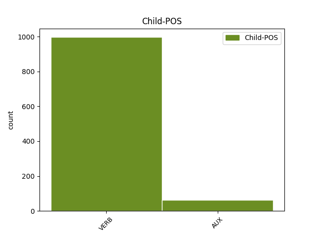

Distribution of features within this leaf



Agreement Rules sorted by frequency.
- When the dependent token is the conjunct(conj) of the head token, and the head token is VERB
1 В _ _ _ _ 0 _ _ _
2 те _ _ _ _ 0 _ _ _
3 годы _ _ _ _ 0 _ _ _
4 в _ _ _ _ 0 _ _ _
5 селе _ _ _ _ 0 _ _ _
6 был быть VERB VBC Aspect=Imp|Gender=Masc|Mood=Ind|Number=Sing|Tense=Past|VerbForm=Fin|Voice=Act 0 _ _ _
7 птичник _ _ _ _ 0 _ _ _
8 и _ _ _ _ 0 _ _ _
9 разбит разбить VERB VBNH Animacy=Inan|Aspect=Perf|Case=Nom|Gender=Masc|Number=Sing|Tense=Past|Variant=Short|VerbForm=Part|Voice=Pass 6 conj _ _
10 колхозный _ _ _ _ 0 _ _ _
11 сад _ _ _ _ 0 _ _ _
12 . _ _ _ _ 0 _ _ _
1 `` _ _ _ _ 0 _ _ _
2 Шкоде _ _ _ _ 0 _ _ _
3 '' _ _ _ _ 0 _ _ _
4 в _ _ _ _ 0 _ _ _
5 конце _ _ _ _ 0 _ _ _
6 1949 _ _ _ _ 0 _ _ _
7 года _ _ _ _ 0 _ _ _
8 были быть AUX VBC Aspect=Imp|Mood=Ind|Number=Plur|Tense=Past|VerbForm=Fin 0 _ _ _
9 заказаны заказать VERB VBNH Animacy=Inan|Aspect=Perf|Case=Nom|Number=Plur|Tense=Past|Variant=Short|VerbForm=Part|Voice=Pass 8 comp:aux@pass _ _
10 ещё _ _ _ _ 0 _ _ _
11 30 _ _ _ _ 0 _ _ _
12 машин _ _ _ _ 0 _ _ _
13 . _ _ _ _ 0 _ _ _
1 Однако _ _ _ _ 0 _ _ _
2 , _ _ _ _ 0 _ _ _
3 продажи _ _ _ _ 0 _ _ _
4 были быть AUX VBC Aspect=Imp|Mood=Ind|Number=Plur|Tense=Past|VerbForm=Fin 0 _ _ _
5 не _ _ _ _ 0 _ _ _
6 так _ _ _ _ 0 _ _ _
7 хороши _ _ _ _ 0 _ _ _
8 и _ _ _ _ 0 _ _ _
9 альбом _ _ _ _ 0 _ _ _
10 не _ _ _ _ 0 _ _ _
11 поднялся подняться VERB VBC Aspect=Perf|Gender=Masc|Mood=Ind|Number=Sing|Tense=Past|VerbForm=Fin|Voice=Mid 4 conj _ _
12 в _ _ _ _ 0 _ _ _
13 чарте _ _ _ _ 0 _ _ _
14 Billboard _ _ _ _ 0 _ _ _
15 200 _ _ _ _ 0 _ _ _
16 выше _ _ _ _ 0 _ _ _
17 163 _ _ _ _ 0 _ _ _
18 строчки _ _ _ _ 0 _ _ _
19 . _ _ _ _ 0 _ _ _
1 За _ _ _ _ 0 _ _ _
2 эту _ _ _ _ 0 _ _ _
3 роль _ _ _ _ 0 _ _ _
4 Финч _ _ _ _ 0 _ _ _
5 был быть AUX VBC Aspect=Imp|Gender=Masc|Mood=Ind|Number=Sing|Tense=Past|VerbForm=Fin 0 _ _ _
6 посмертно _ _ _ _ 0 _ _ _
7 награждён наградить VERB VBNH Animacy=Anim|Aspect=Perf|Case=Nom|Gender=Masc|Number=Sing|Tense=Past|Variant=Short|VerbForm=Part|Voice=Pass 5 comp:aux _ _
8 `` _ _ _ _ 0 _ _ _
9 Оскаром _ _ _ _ 0 _ _ _
10 '' _ _ _ _ 0 _ _ _
11 , _ _ _ _ 0 _ _ _
12 который _ _ _ _ 0 _ _ _
13 получила _ _ _ _ 0 _ _ _
14 его _ _ _ _ 0 _ _ _
15 вдова _ _ _ _ 0 _ _ _
16 Элета _ _ _ _ 0 _ _ _
17 . _ _ _ _ 0 _ _ _
1 Его _ _ _ _ 0 _ _ _
2 происхождение _ _ _ _ 0 _ _ _
3 связано _ _ _ _ 0 _ _ _
4 с _ _ _ _ 0 _ _ _
5 тем _ _ _ _ 0 _ _ _
6 , _ _ _ _ 0 _ _ _
7 что _ _ _ _ 0 _ _ _
8 из-за _ _ _ _ 0 _ _ _
9 строжайшего _ _ _ _ 0 _ _ _
10 формализма _ _ _ _ 0 _ _ _
11 общего _ _ _ _ 0 _ _ _
12 права _ _ _ _ 0 _ _ _
13 большинство _ _ _ _ 0 _ _ _
14 людей _ _ _ _ 0 _ _ _
15 практически _ _ _ _ 0 _ _ _
16 не _ _ _ _ 0 _ _ _
17 имело иметь VERB VBC Aspect=Imp|Gender=Neut|Mood=Ind|Number=Sing|Tense=Past|VerbForm=Fin|Voice=Act 0 _ _ _
18 возможности _ _ _ _ 0 _ _ _
19 подать _ _ _ _ 0 _ _ _
20 иск _ _ _ _ 0 _ _ _
21 в _ _ _ _ 0 _ _ _
22 королевские _ _ _ _ 0 _ _ _
23 суды _ _ _ _ 0 _ _ _
24 , _ _ _ _ 0 _ _ _
25 что _ _ _ _ 0 _ _ _
26 заставляло заставлять VERB VBC Aspect=Imp|Gender=Neut|Mood=Ind|Number=Sing|Tense=Past|VerbForm=Fin|Voice=Act 17 mod@relcl _ _
27 многих _ _ _ _ 0 _ _ _
28 ( _ _ _ _ 0 _ _ _
29 в _ _ _ _ 0 _ _ _
30 том _ _ _ _ 0 _ _ _
31 числе _ _ _ _ 0 _ _ _
32 тех _ _ _ _ 0 _ _ _
33 , _ _ _ _ 0 _ _ _
34 кто _ _ _ _ 0 _ _ _
35 не _ _ _ _ 0 _ _ _
36 был _ _ _ _ 0 _ _ _
37 согласен _ _ _ _ 0 _ _ _
38 с _ _ _ _ 0 _ _ _
39 вынесенными _ _ _ _ 0 _ _ _
40 судами _ _ _ _ 0 _ _ _
41 решениями _ _ _ _ 0 _ _ _
42 ) _ _ _ _ 0 _ _ _
43 обращаться _ _ _ _ 0 _ _ _
44 к _ _ _ _ 0 _ _ _
45 королю _ _ _ _ 0 _ _ _
46 напрямую _ _ _ _ 0 _ _ _
47 , _ _ _ _ 0 _ _ _
48 прося _ _ _ _ 0 _ _ _
49 его _ _ _ _ 0 _ _ _
50 о _ _ _ _ 0 _ _ _
51 `` _ _ _ _ 0 _ _ _
52 милости _ _ _ _ 0 _ _ _
53 и _ _ _ _ 0 _ _ _
54 справедливости _ _ _ _ 0 _ _ _
55 '' _ _ _ _ 0 _ _ _
56 ( _ _ _ _ 0 _ _ _
57 отсюда _ _ _ _ 0 _ _ _
58 и _ _ _ _ 0 _ _ _
59 возникло _ _ _ _ 0 _ _ _
60 названия _ _ _ _ 0 _ _ _
61 права _ _ _ _ 0 _ _ _
62 ) _ _ _ _ 0 _ _ _
63 . _ _ _ _ 0 _ _ _
1 Рафаил _ _ _ _ 0 _ _ _
2 Исаевич _ _ _ _ 0 _ _ _
3 Хигерович _ _ _ _ 0 _ _ _
4 ( _ _ _ _ 0 _ _ _
5 род. родиться VERB VBC Aspect=Perf|Gender=Masc|Mood=Ind|Number=Sing|Tense=Past|VerbForm=Fin|Voice=Act 0 _ _ _
6 19 _ _ _ _ 0 _ _ _
7 июля _ _ _ _ 0 _ _ _
8 1911 _ _ _ _ 0 _ _ _
9 , _ _ _ _ 0 _ _ _
10 Минск _ _ _ _ 0 _ _ _
11 , _ _ _ _ 0 _ _ _
12 ум. умереть VERB VBC Aspect=Perf|Gender=Masc|Mood=Ind|Number=Sing|Tense=Past|VerbForm=Fin|Voice=Act 5 list _ _
13 23 _ _ _ _ 0 _ _ _
14 апреля _ _ _ _ 0 _ _ _
15 1994 _ _ _ _ 0 _ _ _
16 , _ _ _ _ 0 _ _ _
17 Москва _ _ _ _ 0 _ _ _
18 ) _ _ _ _ 0 _ _ _
19 -- _ _ _ _ 0 _ _ _
20 русский _ _ _ _ 0 _ _ _
21 писатель _ _ _ _ 0 _ _ _
22 , _ _ _ _ 0 _ _ _
23 драматург _ _ _ _ 0 _ _ _
24 . _ _ _ _ 0 _ _ _
1 1 _ _ _ _ 0 _ _ _
2 января _ _ _ _ 0 _ _ _
3 1889 _ _ _ _ 0 _ _ _
4 года _ _ _ _ 0 _ _ _
5 произведен _ _ _ _ 0 _ _ _
6 в _ _ _ _ 0 _ _ _
7 чин _ _ _ _ 0 _ _ _
8 вице-адмирала _ _ _ _ 0 _ _ _
9 , _ _ _ _ 0 _ _ _
10 а _ _ _ _ 0 _ _ _
11 в _ _ _ _ 0 _ _ _
12 1891 _ _ _ _ 0 _ _ _
13 году _ _ _ _ 0 _ _ _
14 был быть AUX VBC Aspect=Imp|Gender=Masc|Mood=Ind|Number=Sing|Tense=Past|VerbForm=Fin 15 comp:obl _ _
15 назначен назначить VERB VBNH Animacy=Anim|Aspect=Perf|Case=Nom|Gender=Masc|Number=Sing|Tense=Past|Variant=Short|VerbForm=Part|Voice=Pass 0 _ _ _
16 старшим _ _ _ _ 0 _ _ _
17 флагманом _ _ _ _ 0 _ _ _
18 Балтийского _ _ _ _ 0 _ _ _
19 флота _ _ _ _ 0 _ _ _
20 . _ _ _ _ 0 _ _ _
1 Старший _ _ _ _ 0 _ _ _
2 сын _ _ _ _ 0 _ _ _
3 Максим _ _ _ _ 0 _ _ _
4 окончил _ _ _ _ 0 _ _ _
5 Киевское _ _ _ _ 0 _ _ _
6 суворовское _ _ _ _ 0 _ _ _
7 училище _ _ _ _ 0 _ _ _
8 , _ _ _ _ 0 _ _ _
9 затем _ _ _ _ 0 _ _ _
10 прошел пройти VERB VBC Aspect=Perf|Gender=Masc|Mood=Ind|Number=Sing|Tense=Past|VerbForm=Fin|Voice=Act 0 _ _ _
11 курс _ _ _ _ 0 _ _ _
12 Киевского _ _ _ _ 0 _ _ _
13 общевойскового _ _ _ _ 0 _ _ _
14 командного _ _ _ _ 0 _ _ _
15 училища _ _ _ _ 0 _ _ _
16 ( _ _ _ _ 0 _ _ _
17 училище _ _ _ _ 0 _ _ _
18 было быть AUX VBC Aspect=Imp|Gender=Neut|Mood=Ind|Number=Sing|Tense=Past|VerbForm=Fin 10 appos _ _
19 ликвидировано _ _ _ _ 0 _ _ _
20 в _ _ _ _ 0 _ _ _
21 1992 _ _ _ _ 0 _ _ _
22 году _ _ _ _ 0 _ _ _
23 ) _ _ _ _ 0 _ _ _
24 , _ _ _ _ 0 _ _ _
25 в _ _ _ _ 0 _ _ _
26 настоящее _ _ _ _ 0 _ _ _
27 время _ _ _ _ 0 _ _ _
28 продолжает _ _ _ _ 0 _ _ _
29 службу _ _ _ _ 0 _ _ _
30 в _ _ _ _ 0 _ _ _
31 армии _ _ _ _ 0 _ _ _
32 в _ _ _ _ 0 _ _ _
33 звании _ _ _ _ 0 _ _ _
34 полковника _ _ _ _ 0 _ _ _
35 . _ _ _ _ 0 _ _ _
1 С _ _ _ _ 0 _ _ _
2 1 _ _ _ _ 0 _ _ _
3 июля _ _ _ _ 0 _ _ _
4 1995 _ _ _ _ 0 _ _ _
5 года _ _ _ _ 0 _ _ _
6 Мари _ _ _ _ 0 _ _ _
7 - _ _ _ _ 0 _ _ _
8 Шанталь _ _ _ _ 0 _ _ _
9 замужем _ _ _ _ 0 _ _ _
10 за _ _ _ _ 0 _ _ _
11 ( _ _ _ _ 0 _ _ _
12 род. родиться VERB VBC Aspect=Perf|Gender=Masc|Mood=Ind|Number=Sing|Tense=Past|VerbForm=Fin|Voice=Act 0 _ _ _
13 1967 _ _ _ _ 0 _ _ _
14 ) _ _ _ _ 0 _ _ _
15 , _ _ _ _ 0 _ _ _
16 с _ _ _ _ 0 _ _ _
17 которым _ _ _ _ 0 _ _ _
18 она _ _ _ _ 0 _ _ _
19 встречалась встречаться VERB VBC Aspect=Imp|Gender=Fem|Mood=Ind|Number=Sing|Tense=Past|VerbForm=Fin|Voice=Mid 12 orphan _ _
20 3 _ _ _ _ 0 _ _ _
21 года _ _ _ _ 0 _ _ _
22 до _ _ _ _ 0 _ _ _
23 их _ _ _ _ 0 _ _ _
24 свадьбы _ _ _ _ 0 _ _ _
25 . _ _ _ _ 0 _ _ _
Disagree Examples:
1 Когда _ _ _ _ 0 _ _ _
2 он _ _ _ _ 0 _ _ _
3 будет быть AUX VBC Aspect=Imp|Mood=Ind|Number=Sing|Person=3|Tense=Fut|VerbForm=Fin 0 _ _ _
4 заполнен заполнить VERB VBNH Animacy=Inan|Aspect=Perf|Case=Nom|Gender=Masc|Number=Sing|Tense=Past|Variant=Short|VerbForm=Part|Voice=Pass 3 comp:aux@pass _ SpaceAfter=No
5 , _ _ _ _ 0 _ _ _
6 у _ _ _ _ 0 _ _ _
7 драконов _ _ _ _ 0 _ _ _
8 появляется _ _ _ _ 0 _ _ _
9 возможность _ _ _ _ 0 _ _ _
10 перейти _ _ _ _ 0 _ _ _
11 в _ _ _ _ 0 _ _ _
12 режим _ _ _ _ 0 _ _ _
13 ярости _ _ _ _ 0 _ _ _
14 , _ _ _ _ 0 _ _ _
15 силе _ _ _ _ 0 _ _ _
16 которого _ _ _ _ 0 _ _ _
17 не _ _ _ _ 0 _ _ _
18 способен _ _ _ _ 0 _ _ _
19 сопротивляться _ _ _ _ 0 _ _ _
20 ни _ _ _ _ 0 _ _ _
21 один _ _ _ _ 0 _ _ _
22 противник _ _ _ _ 0 _ _ _
23 в _ _ _ _ 0 _ _ _
24 игре _ _ _ _ 0 _ _ _
25 . _ _ _ _ 0 _ _ _
1 Сидя _ _ _ _ 0 _ _ _
2 на _ _ _ _ 0 _ _ _
3 стуле _ _ _ _ 0 _ _ _
4 , _ _ _ _ 0 _ _ _
5 Константин _ _ _ _ 0 _ _ _
6 во _ _ _ _ 0 _ _ _
7 время _ _ _ _ 0 _ _ _
8 удара _ _ _ _ 0 _ _ _
9 током _ _ _ _ 0 _ _ _
10 видит _ _ _ _ 0 _ _ _
11 , _ _ _ _ 0 _ _ _
12 что _ _ _ _ 0 _ _ _
13 Копье _ _ _ _ 0 _ _ _
14 Судьбы _ _ _ _ 0 _ _ _
15 было быть AUX VBC Aspect=Imp|Gender=Neut|Mood=Ind|Number=Sing|Tense=Past|VerbForm=Fin 0 _ _ _
16 обнаружено _ _ _ _ 0 _ _ _
17 в _ _ _ _ 0 _ _ _
18 Мексике _ _ _ _ 0 _ _ _
19 и _ _ _ _ 0 _ _ _
20 доставлено _ _ _ _ 0 _ _ _
21 в _ _ _ _ 0 _ _ _
22 Лос-Анджелес _ _ _ _ 0 _ _ _
23 , _ _ _ _ 0 _ _ _
24 а _ _ _ _ 0 _ _ _
25 Анджела _ _ _ _ 0 _ _ _
26 находится находиться VERB VBC Aspect=Imp|Mood=Ind|Number=Sing|Person=3|Tense=Pres|VerbForm=Fin|Voice=Mid 15 conj _ _
27 в _ _ _ _ 0 _ _ _
28 психиатрической _ _ _ _ 0 _ _ _
29 больнице _ _ _ _ 0 _ _ _
30 , _ _ _ _ 0 _ _ _
31 где _ _ _ _ 0 _ _ _
32 перед _ _ _ _ 0 _ _ _
33 смертью _ _ _ _ 0 _ _ _
34 содержалась _ _ _ _ 0 _ _ _
35 её _ _ _ _ 0 _ _ _
36 сестра _ _ _ _ 0 _ _ _
37 , _ _ _ _ 0 _ _ _
38 в _ _ _ _ 0 _ _ _
39 окружении _ _ _ _ 0 _ _ _
40 полудемонов _ _ _ _ 0 _ _ _
41 , _ _ _ _ 0 _ _ _
42 намеревающихся _ _ _ _ 0 _ _ _
43 провести _ _ _ _ 0 _ _ _
44 ритуал _ _ _ _ 0 _ _ _
45 `` _ _ _ _ 0 _ _ _
46 рождения _ _ _ _ 0 _ _ _
47 '' _ _ _ _ 0 _ _ _
48 Маммоны _ _ _ _ 0 _ _ _
49 из _ _ _ _ 0 _ _ _
50 тела _ _ _ _ 0 _ _ _
51 девушки _ _ _ _ 0 _ _ _
52 . _ _ _ _ 0 _ _ _
1 Механизмы _ _ _ _ 0 _ _ _
2 аутентификации _ _ _ _ 0 _ _ _
3 гарантируют _ _ _ _ 0 _ _ _
4 , _ _ _ _ 0 _ _ _
5 что _ _ _ _ 0 _ _ _
6 только _ _ _ _ 0 _ _ _
7 добросовестным _ _ _ _ 0 _ _ _
8 абонентам _ _ _ _ 0 _ _ _
9 , _ _ _ _ 0 _ _ _
10 обладающим _ _ _ _ 0 _ _ _
11 добросовестным _ _ _ _ 0 _ _ _
12 оборудованием _ _ _ _ 0 _ _ _
13 , _ _ _ _ 0 _ _ _
14 то _ _ _ _ 0 _ _ _
15 есть _ _ _ _ 0 _ _ _
16 не _ _ _ _ 0 _ _ _
17 украденным _ _ _ _ 0 _ _ _
18 или _ _ _ _ 0 _ _ _
19 нестандартным _ _ _ _ 0 _ _ _
20 , _ _ _ _ 0 _ _ _
21 будет быть AUX VBC Aspect=Imp|Mood=Ind|Number=Sing|Person=3|Tense=Fut|VerbForm=Fin 0 _ _ _
22 предоставлен предоставить VERB VBNH Animacy=Inan|Aspect=Perf|Case=Nom|Gender=Masc|Number=Sing|Tense=Past|Variant=Short|VerbForm=Part|Voice=Pass 21 comp:aux@pass _ _
23 доступ _ _ _ _ 0 _ _ _
24 сети _ _ _ _ 0 _ _ _
25 . _ _ _ _ 0 _ _ _
1 После _ _ _ _ 0 _ _ _
2 этого _ _ _ _ 0 _ _ _
3 Корсика _ _ _ _ 0 _ _ _
4 получила получить VERB VBC Aspect=Perf|Gender=Fem|Mood=Ind|Number=Sing|Tense=Past|VerbForm=Fin|Voice=Act 0 _ _ _
5 статус _ _ _ _ 0 _ _ _
6 особой _ _ _ _ 0 _ _ _
7 экономической _ _ _ _ 0 _ _ _
8 зоны _ _ _ _ 0 _ _ _
9 , _ _ _ _ 0 _ _ _
10 но _ _ _ _ 0 _ _ _
11 дальше _ _ _ _ 0 _ _ _
12 автономии _ _ _ _ 0 _ _ _
13 правительство _ _ _ _ 0 _ _ _
14 Франции _ _ _ _ 0 _ _ _
15 не _ _ _ _ 0 _ _ _
16 идёт идти VERB VBC Aspect=Imp|Mood=Ind|Number=Sing|Person=3|Tense=Pres|VerbForm=Fin|Voice=Act 4 conj _ SpaceAfter=No
17 . _ _ _ _ 0 _ _ _
1 Глава _ _ _ _ 0 _ _ _
2 государства _ _ _ _ 0 _ _ _
3 -- _ _ _ _ 0 _ _ _
4 президент _ _ _ _ 0 _ _ _
5 ( _ _ _ _ 0 _ _ _
6 гражданин _ _ _ _ 0 _ _ _
7 Монголии _ _ _ _ 0 _ _ _
8 , _ _ _ _ 0 _ _ _
9 родившийся _ _ _ _ 0 _ _ _
10 здесь _ _ _ _ 0 _ _ _
11 , _ _ _ _ 0 _ _ _
12 достигший достигнуть VERB VBNL Animacy=Anim|Aspect=Perf|Case=Nom|Gender=Masc|Number=Sing|Tense=Past|VerbForm=Part|Voice=Act 0 _ _ _
13 сорока _ _ _ _ 0 _ _ _
14 пяти _ _ _ _ 0 _ _ _
15 лет _ _ _ _ 0 _ _ _
16 , _ _ _ _ 0 _ _ _
17 постоянно _ _ _ _ 0 _ _ _
18 проживающий проживать VERB VBNL Animacy=Anim|Aspect=Imp|Case=Nom|Gender=Masc|Number=Sing|Tense=Pres|VerbForm=Part|Voice=Act 12 conj _ _
19 в _ _ _ _ 0 _ _ _
20 стране _ _ _ _ 0 _ _ _
21 последние _ _ _ _ 0 _ _ _
22 пять _ _ _ _ 0 _ _ _
23 лет _ _ _ _ 0 _ _ _
24 ) _ _ _ _ 0 _ _ _
25 , _ _ _ _ 0 _ _ _
26 избираемый _ _ _ _ 0 _ _ _
27 на _ _ _ _ 0 _ _ _
28 путём _ _ _ _ 0 _ _ _
29 всеобщего _ _ _ _ 0 _ _ _
30 прямого _ _ _ _ 0 _ _ _
31 и _ _ _ _ 0 _ _ _
32 тайного _ _ _ _ 0 _ _ _
33 голосования _ _ _ _ 0 _ _ _
34 сроком _ _ _ _ 0 _ _ _
35 на _ _ _ _ 0 _ _ _
36 4 _ _ _ _ 0 _ _ _
37 года _ _ _ _ 0 _ _ _
38 . _ _ _ _ 0 _ _ _